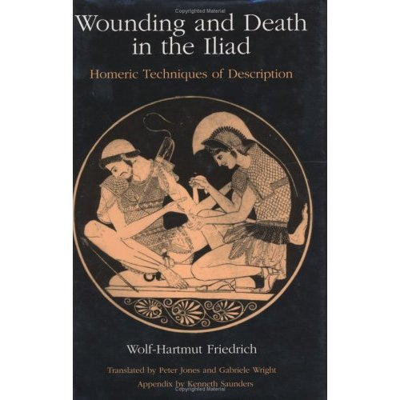

Ablerus went down too under the flashing lance of Nestor’s son Antilochus
58: Antilochus kills Ableros
Ablerus went down too under the flashing lance of Nestor’s son Antilochus
58: Antilochus kills Ableros
Polypetes braced for battle killed Astyalus— Winging his bronze spear Odysseus slew Pidytes bred in Percote, and Teucer did the same for the royal Aretaon—
55, 56 & 57: Polypoetes kills Astyalus, Odysseus kills Pidytes, Teucer kills Aretaon
Euryalsus killed Dresus, killed Opheltius, turned and went for Pedasus and Aesepus, twins … the son of Mecisteus hacked the force from beneath them both and losed their gleaming limbs and tore the armor off the dead men’s shoulders.
51, 52, 53 & 54: Euryalus kills Dresus, Opheltius, Aesepus and Pedasus
A shattering war cry! Diomedes killed off Axylus … Diomedes killed the man and his aide-in-arms at once, Axylus and Calesius who always drove his team— both at a stroke he drove beneath the earth.
49 & 50: Diomedes kills Axylus and Calesius
The first to hurl, Great Ajax hit the ridge of the helmet’s horse hair crest—the bronze point stuck Acamas’ forehead pounding through his skull and the dark came swirling down to shroud his eyes.
48: Telamonian Ajax kills Acamas

Wounding and Death in the Iliad: Homeric Techniques of Description
Taking a breather after all the blood letting of Book 5
Diomedes yelled his war cry, lunging out with his own bronze spear and Pallas rammed it home, deep in Ares’ bowels where the belt cinched him tight. There Diomedes aimed and stabbed, he gouged him down his glistening flesh and wrenched the spear back out and the brazen god of war let loose a shriek, roaring, thundering loud as nine, ten thousand combat soldiers shriek with Ares’ fury when massive armies clash. A shudder swept all ranks, Trojans and Argives both, terror-struck by the shriek the god let loose, Ares whose lust for slaughter never dies.
Diomedes wounds Ares god of war
The god was just stripping giant Periphas bare, the Aetolians’ best fighter, Ochesius’ s noble son— the blood-smeared Ares was tearing off his gear
47: Ares kills Periphas
Who was the first they slaughtered, who the last, the brazen god of war and Hector son of Priam? Teuthras first, Orestes lasher of stalions next, an Aetolian spearman Trechus, Oenomaus and Helenus, Oenops’ son, and Oresbius cinched with his shining belt
41, 42, 43, 44, 45 & 46: Hector kills Teuthras, Orestes, Trechus, Oenomaus, Helenus and Oresbius
it was not the gallant Odysseus’ fate to finish Zeus’s rugged son with his sharp bronze, so Pallas swung his fury against the Lycian front. Whirling, killing Coeranus, Chromius and Alastor, killing Alcander and Halius, Prytanis and Noemon— and stalwart Odysseus would have killed still more
34, 35, 36, 37, 38, 39 & 40: Odysseus kills Coeranus, Chromius, Alastor, Alcander, Halius, Prytanis and Noemon.
Tlepolemus raised his ashen spear and the same moment shafts flew from their hands and Sarpedon hit him square across the neck, the spear went ramming through—pure agony— black night came swirling down across his eyes. But Tlepolemus’ shaft had struck Sarpedon too, the homed tip of the weapon hitting his left thigh, ferocious, razoring into flesh and scraping bone but his Father beat of death a little longer.
32: Sarpedon kills Tlepolemus (and simultaneously, Tlepolemus nearly kills Sarpedon)
Now giant Ajax speared him through the belt, deep in the guts the long shadowy shaft stuck and down he fell with a crash
31: Telamonian Ajax kills Amphion
Hector, lunging,
leveled a pair of men who knew the joy of battle,
riding a single chariot, Menesthes and Anchialus.
29 & 30: Hector kills Menesthes and Anchialus
Antilochus winged a rock and smashed his elbow— out of his grip the reigns white with ivory flew and slipped to the ground and tangled in the dust. Antilochus sprang, he plunged a sword in his temple and Mydon, gasping, hurled from his bolted car face first, head and shoulders stuck in a dune for a good long time for the sand was soft and deep—his lucky day— till his own horses trampled him down
28: Antilochus kills Mydon
I woud have thought a sword in your temple would be pretty decisive but apparently not.
And next they killed Pylaemenes tough as Ares, a captain heading the Paphlagonian shieldsmen, hot-blooded men. Menelaus the famous spearman stabbed him right where he stood, the spearpoint pounding his collarbone to splinters.
27: Menelaus kills Pylaemenes
so death put an end to them both, wrapped them both in night. Fresh as two young lions off on the mountain ridges, twins reared by a lioness deep in dark glades, that ravage shepherds’ steadlings, mauling the cattle and fat sheep till it’s their turn to die—hacked down by the cleaving bronze blades in the shepherds’ hands. So here the twins were laid low by Aeneas’ hands, down they crashed like lofty pine trees axed.
25 & 26: Aeneas kills Crethon and Orsilochus
Now his shield took powerful Agamemnon’s spear but failed to deflect it, straight through it smashed, bronze splitting his belt and plunging down his guts— he fell, thundering, armor ringing against him.
24: Agamemnon kills Deicoon
Just as Diomedes hefted a boulder in his hands, a tremendous feat— no two men could hoist it, weak as men are now, but all on his own he raised it high with ease, flung it and struck Aeneas’ thigh where the hipbone turns inside the pelvis, the joint they call the cup— it smashed the socket, snapped both tendons too and the jagged rock tore back the skin in shreds. The great fighter sank to his knees, bracing himself with one strong forearm planted against the earth, and the world went black as night before his eyes.
Not a death: Diomedes wounds Aeneas
Aeneas is subsequently saved by Aphrodite
With that he hurled and Athena drove the shaft and it split the archer’s nose between the eyes— it cracked his glistening teeth, the tough bronze cut of his tongue at the roots, smashed his jaw and the point came ripping out beneath his chin. He pitched from his car, armour clanged against him, a glimmering blaze of metal dazzling round his back— the purebreds reared aside, hoofs pawing the air and his life and power slipped away on the wind.
23: Diomedes kills Pandarus
As a lion charges cattle, calves and heifers browsing the deep glades and snaps their necks, so Tydides pitched them both from the chariot, gave them a mauling—gave them little choice—
21 & 22: Diomedes kills Echemmon and Chromius
The son of Thydeus killed the two of them on the spot, he ripped the dear life out of both and left their father tears and wrenching grief
19 & 20: Diomedes kills Xanthus and Thoon
the old prophet read no dreams for them when they set out for Troy—Diomedes laid them low
17 & 18: Diomedes kills Abas and Polyidus
he killed Astynous, then Hypiron,a frontline captain. One he stabbed with a bronze lance above the nipple, the other his heavy sword hacked at the collar bone, right on the shoulder, cleaving the whole shoulder clear of the neck and back. And he left them there dead
15 & 16: Diomedes kills Astynous & Hypiron
Eurypylus, chasing Hypsenor fleeing on before him, flailed with a sword, slashed the Trojan’s shoulder and lopped away the massive bulk of Hypsenor’s arm… the bloody arm dropped to the earth, and red death came plunging down his eyes, and the strong force of fate.
14: Eurypylus kills Hypsenor
Meges killed Pedaeus, Antenor’s son, a bastard boy but lovely Theano nursed him with close, loving care like her own children, just to please her husband. Closing, Meges gave him some close attention too— the famous spearman struck behind his skull, just at the neck-cord, the razor spear slicing straight up through the jaws, cutting away the tongue— he sank in the dust, teeth clenching the cold bronze.
13: Meges kills Pedaeus
Longer excerpt than usual, this is my favourite so far.
Most of the deaths have been preceded by some kind of mini biog of the fallen - as my friend Abbie commented “exemplary war reporting” - I’ve mostly been cutting these out but this is a great example. Also the way it switches from tender reflection to the brutal geometry of spear impact is really sweet. Meges gave him some close attention too—
Meriones caught him quickly, running him down hard and speared him low in the right buttock—the point pounding under the pelvis, jabbed and pierced the bladder— he dropped to his knees, screaming, death swirling round him.
12: Meriones kills Phereclus
… now Menelaus the great spearman ran him through, square between the blades as he fled and raced ahead, tearing into his flesh, drilling out through his chest— he crashed facedown, his armour clanged against him.
11: Menelaus kills Scamandrius
As he tried to mount behind his team the famous spearman stabbed a heavy javelin deep in his right shoulder— he dropped from his war-cry, gripped by the hateful dark.
10: Idomeneus kills Phaestus
… First Agamemnon lord of men spilled the giant Odius, chief of the Halizonians off his car—the first to fall, as he veered away the spearhead punched his back between the shoulders, gouging his flesh and jutting out through his ribs— he fell with a crash, his armour rang against him.
9: Agamemnon kills Odius
the bronze launched from his hand and not for nothing: hitting Phegeus’ chest between the nipples it pitched him out behind his team…
8: Diomedes kills Phegeus
Aetolian Thoas speared him as he swerved and sprang away, the lancehead piercing his chest above the nipple plunged deep in his lung, and Thoas, running up, wrenched the heavy spear from the man’s chest, drew his blade, ripped him across the belly, took his life…
7: Thoas kills Pirous